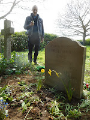
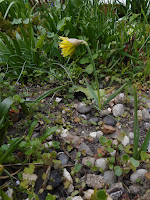

| April 2016 Happy Daffs |
{kind=link}
Five years ago on this date I was giving thanks for the joy of daffodils. I was bearing witness to the blessed moments of relief given by their inherent gaiety to my mother’s poor tired mind as her dementia worsened and paranoia set in. It wasn’t long before we were forced to admit that the illness was overwhelming her and she needed to move into the dementia nursing unit where, finally, she would die. Meanwhile, in April 2016, there was a neglected strip of flower bed opposite the window of her extra care flat. After ripping out the couch grass and cutting back the dead twigs, we planted two small clumps of daffodils. Mum's flat was increasingly filled with ghosts and murderers that set her screaming in the dark and me hurtling down the 60 miles of main road attempting to hold them at bay. In the end I lost that battle, but this time five years ago, my main allies were those daffodils.
I wrote Even in the time of
sundowners when Mum’s brain is exhausted and she sees figures who are not there
and she is lost in her own mind, as well as her own space, just sometimes the
little yellow fellows have gleamed through the gathering dark. And in the
morning there they are again, life-enhancing as the dawn chorus which she can
no longer hear.
Our few moments of respite came during the time we spent
outside, planting and watering and going for long slow walks, reciting
Wordsworth: ‘And then my heart with pleasure fills / and dances with the
daffodils.’ Those last lines came as a breath of freshness every time.
I hope that there are daffodils on her grave – and primroses, violets, grape hyacinths, perhaps even some lily-of the valley? Or will they all have been smothered by the rampageous periwinkle and ground elder that rule that corner of her country churchyard? Under lock-down rules it’s been too distant for me to reach but I’m planning a birthday visit this weekend with fork and secateurs.
 |
| April 2019 Interment Day Daffs |
{kind=link}
Dot, an unmet Facebook friend whose mother lives in a care home, posted sadly that for the second year there would be no daffodils for her. She had hoped she could put her mum into a wheelchair and cross the road to some green space where they might be fluttering and dancing in the breeze. But the government guidance which has consistently advocated the benefits of fresh air and exercise, even during the strictest lock down has equally consistently denied these to people who live in care homes. Remember last month’s ‘Freedom Monday’ March 8th when people were photographed jumping into outdoor pools and playing golf at midnight? A guidance document, rushed out for care homes, stated that permission to go out ‘could not be considered for people over ‘working age’. So, no daffodil trip for Dot’s mother.
At John’s Campaign we issued a legal challenge on the basis of age discrimination. Yesterday the guidance was re-issued, without any reference to age but with a catch-all proviso that any resident (a new sub-species) who took advantage of a risk-assessed trip out from the ‘home’, would then be required to ‘self-isolate’ for 14 days. This is because, you understand, of the ‘risk’ that s/he might be bringing infection into the care home community. Never mind if her daughter has ensured that they ‘wandered lonely as a cloud’; never mind that staff members, tradespeople, managers, health and social care professionals are in and out of the ‘home’ every day – one insignificant excursion by a resident and it’s 14 days in the cooler. The government document says: We recognise that in practice, this is likely to mean that many residents will not wish to make a visit out of the home.
If you’d arrived by aeroplane from a country on the UK red list you’d only be in for 10 days. The cost would be about the same. Quarantine in a govt approved hotel is £1750 for 10 days: my mother’s care home room was £1250 per week. Mum was a ‘self-funder’; there are many people like in our English care homes who paying for their own incarceration, necessary because of illness. Remarkably they are found to have fewer rights (not the same, fewer) than people who have been ‘placed’ in residential accommodation (who usually pay less). (If you’re interested in comparisons you may like to know that the average weekly cost of a prison place is £858, but the state pays.)
How does this enforced confinement sit with Article 5 of the Human Rights Act, the Right to Liberty?
1. Everyone has the right to liberty and security of person. No one shall be deprived of his liberty save in the following cases and in accordance with a procedure prescribed by law: (the list includes)
the lawful detention of persons for the prevention of the spreading of infectious diseases, of persons of unsound mind, alcoholics or drug addicts or vagrants
I’d like to be shown that ‘legal
procedure’– and I’m looking forward to the day that the people living in care
homes whose minds are sound, whatever the fragility of their bodies, (and are
not alcoholics, drug addicts or vagrants) exercise their right to take action
and demand compensation for their unlawful detention
Everyone who is deprived of his liberty by arrest or
detention shall be entitled to take proceedings by which the lawfulness of his
detention shall be decided speedily by a court and his release ordered if the
detention is not lawful.
Everyone who has been the victim of arrest or
detention in contravention of the provisions of this Article shall have an
enforceable right to compensation.
There
are other laws – there’s the Care Act 2014 which includes a duty ‘to promote
well-being’. I rather wish there could be simple human-kindness, compassion and
respect, even in time of covid. A correspondent writes:
My
brother, who is 76, has been a happy resident at a care home for older adults
for the last 12 years. His learning disability means he is unable to live by
himself but he is physically able. In that time he has been able to live a life
that gives him some stimulation, exercise and a degree of independence. This
has revolved around daily walks to the post box, going weekly to the PO, paying
his own paper bill and going independently to the local hairdressers and working
with me on his flower bed. One afternoon each week I took him out, for a walk,
visit to a garden centre or local gardens and each weekend for 12 years he has
spent a day at my home spending much of the time with me in the garden.
All of this has of course come to a halt. He is now physically unfit, his
mental abilities have deteriorated and he is very unhappy. He has missed one
spring and is well on the way to missing another. While I recognise urgent
action had to be taken to protect residents, residents have had their 2nd vaccine and are now as protected as they are going to be.
The Government has now confirmed that all shielding has ended. For some weeks I
have been trying to get permission to take him for a walk to the local park but
this has been denied, the only concession made is that my weekly visit can now be outside. For my brother, a trip out in my car to
our house is a forlorn dream.
 |
| April 2021 Sad Daff |
{kind=link}
Mitch, who I only know through email, took flowers in to his mother when he wasn't 'allowed' to visit her -- but they too had to be quarantined - and as no-one gave them any water, they died.